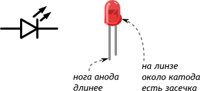
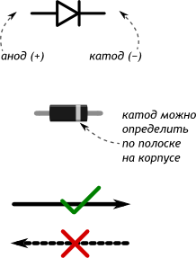

Зажигаем светодиод
Светодиод (англ. Light Emitting Diode или просто LED) — энергоэффективная, надёжная, долговечная «лампочка»
Светодиод — вид диода, который светится, когда через него проходит ток от анода (+) к катоду (−).


Основные характеристики
Падение напряжения VF Вольт
Номинальный ток I Ампер
Интенсивность (яркость) IV Кандела
Длина волны (цвет) λ Нанометр
Типовая схема включения

Собственное сопротивление светодиода после насыщения очень мало, и без резистора, ограничивающего ток через светодиод, он перегорит
Порядок: «резистор до» или «резистор после» — не важен